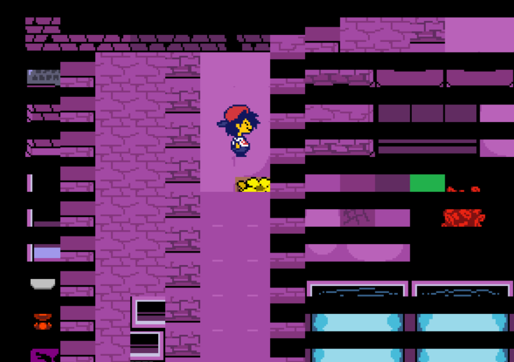

Hello, im glintfish, lead programmer for Undertale: Funk Mode!
Damn, this mod has been in the works for an entire year now. Its kinda crazy to think about!
Ive been in this community for around 4 years now, and to think about how Funk Mode has been here
for a fourth of it is... idk! Weird i guess?
But a good kind of weird. Time flies by fast!
I know you didn't come here to read about my life story so I'll cut it short and move onto the
coding for the mod.
Lets not beat around the bush, coding is the main thing keeping this mod from coming out. Who would've
guessed that coding is really hard!
Generally the thing thats been the biggest issue is planning ahead. We as the coders wanna make the
mod as easy as possible to develop for,
so that future updates can come out faster, but that also means a lot of planning, a lot of rewrites and
refactors, and a LOT of code...
Although, not really.
Im not going to lie, im an optimization nut. I love optimizing and squeezing as much performance
as i can out of literally anything, and
im especially doing it now because i want EVERYONE to be able to experience Funk Mode without any
issues.
As of writing (3. May 2025.), the mod has ~3200 lines of code. compared to Psych 0.7.3's ~31000
or our old engines ~10000,
and you can see the difference! I didn't want useless code and random stuff cluttering the codebase, so
we ended up switching engines
to one I was in the process of working on, which turned out to be a huge success!
Everything is insanely modular, easy to work with and understand, and also DOCUMENTED, unlike
literally every other FNF mod / engine out there.
I dont wanna sound like im bragging, but im just insanely happy with the way everything was done for
this mod.
Now back to the actual progress. Again, as of writing, I just finished the mods new overworld
implementation, and it works like a charm.
Honestly, we don't really have that much stuff left to finish! Unfortunately, I am usually the one
pulling most of the weight as our other coders
are fairly busy, but I don't mind that- I like working on Funk Mode!
this is what it looked like before glint fixed it LMAO
- Zach

I am thinking about open sourcing Funk Mode once it releases, but at the same time, I don't want
people blatantly stealing all my hard work,
which is what the community usually does. I dunno, we'll see when the time comes!
That's it for now, thanks for reading!
* The dummy needs time to concentrate.....
btw glint made these sexy ass scripts that is so insanely modular it's fucking wild LMAO
- Zach


oh and then this happened
- Zach


")